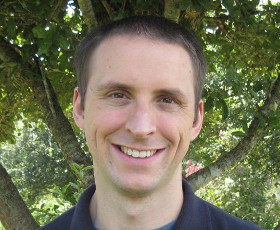
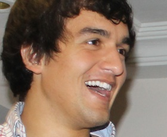

Speakers
-

Gregor Martynus
Offlne First, Made Easy
Gregor Martynus
Gregor is a full stack developer & UX designer, questioning the status quo of what’s possible in the browser today. He created minutes.io and Hoodie, a JavaScript Library/Architecture that enables you to build offline-capable applications without ever thinking about the backend.
He’s a founder at The Hoodie Firm, where he tries to figure out how to fund the “Hoodie” Open Source project without selling his soul. He lives with his wife in Zurich, but sometimes he's off and on the road to just another AfricaHackTrip.
-

Lynn Fisher
Developers as Intentional Designers
Lynn Fisher
Lynn Fisher is a designer and front-end developer from Chandler, Arizona, currently working with the awesome folks at &yet. She can usually be found buried in a text editor or chatting excitedly about improving the way designers and developers work together.
-

Eduardo Shiota
Rock the browser like it's 1983
Eduardo Shiota
I'm a front-end engineer and designer, who moved from the land of samba to the land of bicycles. Started developing pages in 1998, have been working with web development since 2002 and with design since 2005. I'm fluent in HTML, CSS and JavaScript development and hack my way through Ruby and PHP whenever needed.
I graduated in Arts, so I also have skills in print, type, and web design. My main design skill is crafting engaging and optimal User Experience, applying Information Architecture and User-Centered Design concepts.
-

Francis Gulotta
Full Stack Firmata
Francis Gulotta
Francis Gulotta is a long time developer and lover of electronics. He spends his days with his development team at Wizard Development and his nights working on javascript robots.
-

Tim Caswell
The JS-Git journey
Tim Caswell
Tim Caswell is an inventor, always looking for new ways to make life better for programmers. Tim is most well known for his early contributions to node.js as a member of the original node Illuminati that met often to plan the early stages of node’s future. Tim has over 100 modules published to the npm registry and has authored about 300 open source projects on GitHub scattered across various organizations. Tim also teaches local programming classes in rural Texas and is currently trying to bootstrap a startup that helps more kids get into programming. He is also the creator and primary author of the community run howtonode.org.
-

Dave Furfero
Close Enough: Using JavaScript to Emulate the Abstract Expressionist Masterworks of Chuck Close
Dave Furfero
Dave Furfero dropped out of art school in 1993 after two professors told him that he lacked the discipline required to be an artist. They were right. Twenty-one years later, he is a Solutions Architect at HUGE and spends his spare time teaching computers to create art for him. He is also the author of the popular jQuery UI plugin Touch Punch.
-

Jú Gonçalves
You, programming languages and the browser
Ju Goncalves
Jú Gonçalves is currently a freelance Frontend Engineer and MSC candidate in Computer Science. She likes to code and to discuss about coding, specially JavaScript, functional paradigm and good design choices. That's why she spends her free time coding some new (yet another?) UI frameworks and playing around with langs that compiles to Javascript.
-

Tim Park
JavasScript for all the things!
Tim Park
Tim is an engineer in residence at Microsoft. He resides in Silicon Valley and helps companies use open technologies on the Azure cloud platform and mentors startups in Microsoft's Palo Alto Internet of Things accelerator. Before rejoining Microsoft, he was part of Nest Labs, an internet of things startup focused on making the home more energy efficient. Tim aspires to start his day with a perfectly brewed cup of coffee and end it with a pint of craft beer.
-

David Dias
Close Enough: Using JavaScript to Emulate the Abstract Expressionist Masterworks of Chuck Close
David Dias
Dave Furfero dropped out of art school in 1993 after two professors told him that he lacked the discipline required to be an artist. They were right. Twenty-one years later, he is a Solutions Architect at HUGE and spends his spare time teaching computers to create art for him. He is also the author of the popular jQuery UI plugin Touch Punch.
-

Bernard Kobos
Appium
Bernard Kobos
I started coding during primary school being inspired by older brothers' home assignments. During years I developed bigger and smaller apps in various programming languages, both as professional and personal pet projects. Not being satisfied with innovativeness of the tasks, I started applying for fully remote positions at startup companies to work on cutting edge projects which could better utilize my skill set. Currently I'm working in a test-centered company that strongly believes in automated testing solutions. We provide infrastructure and work on making testing more accessible for every developer. I've been contributing to open source projects such as: WD.js, Selenium Builder and Appium.
-

John Paul
ES6 on the frontend, in the real world
John Paul
I started coding during primary school being inspired by older brothers' home assignments. During years I developed bigger and smaller apps in various programming languages, both as professional and personal pet projects. Not being satisfied with innovativeness of the tasks, I started applying for fully remote positions at startup companies to work on cutting edge projects which could better utilize my skill set. Currently I'm working in a test-centered company that strongly believes in automated testing solutions. We provide infrastructure and work on making testing more accessible for every developer. I've been contributing to open source projects such as: WD.js, Selenium Builder and Appium.
-
Eric Mann
Monkeys in the machine
Eric Mann
Eric Mann is a seasoned web developer with experience in languages from JavaScript to Ruby to C# to PHP. He has been building websites of all shapes and sizes for the better part of a decade and continues to experiment with new technologies and techniques.
Eric is a Senior Web Engineer at 10up where he focuses on developing high-end web solutions powered by WordPress.
Schedule
- 8:00
- Registration
- 8:50
- Welcome
- 9:00
-
Developers as Intentional Designers
Lynn Fisher
- 9:30
-
Close Enough: Using JavaScript to Emulate the Abstract Expressionist Masterworks of Chuck Close
Dave Furfero
- 10:00
-
The JS-Git Journey
Tim Caswell
- 10:30
-
Coffee-Break
- 11:00
-
Offline First, Made Easy
Gregor Martynus
- 11:30
-
Appium
Bernard Kobos
- 12:30
-
Monkeys in the Machine
Eric Mann
- 14:30
-
JavaScript for all the things!
Tim Park
- 15:00
-
You, programming languages and the browser
Jú Gonçalves
- 15:30
-
Securing Node apps, by the community and for the community
David Dias
- 16:00
-
Coffee-Break
- 16:30
-
Full Stack Firmata
Francis Gulotta
- 17:00
-
ES6 on the frontend, in the real world
John Paul
- 17:30
-
Rock the browser like it's 1983
Eduardo Shiota
- 18:00
-
Family Photo
Location
Hotel Vila Galé FortalezaAv. Dioguinho, 4189 - Praia do Futuro. Fortaleza/CE - Brazil
The Vila Galé Fortaleza Hotel is located on the beach only 10 minutes away from the renowned Avenida Beira-Mar, in Fortaleza.
This hotel in Fortaleza features a Beach Tent as well where you can enjoy the lovely weather of North-eastern Brazil, being entitled to a bar service and all the facilities that’ll make it a great afternoon and a perfect holiday in Brazil.
Call for Papers
We are inviting the JavaScript community to submit talks for the upcoming JSConf BR. If you know someone who may deliver an interesting talk, please let us know and we'll contact them.
Our talk selection process favors content (blind selection process); We want our community to be inclusive!
If you get selected as a speaker, here's what you get:
We cover the flights and your stay at a nice Fortaleza hotel for the days of the conference. If your employer can cover your travel and hotel, we are more than happy to list them as sponsors! The money we save will be used to make the conference even better.
30 minutes to present in front of the greatest audience ever: the JSConf family!
Call For Papers Ended :(Let us know if you need help with anything that is not listed here, we'll be more than happy to help.
We value having a safe, family-friendly, harassment-free environment, check our code of conduct.
PS: crazy topics get extra points ;)
Sponsors
Platinum


Glod


Silver


Support